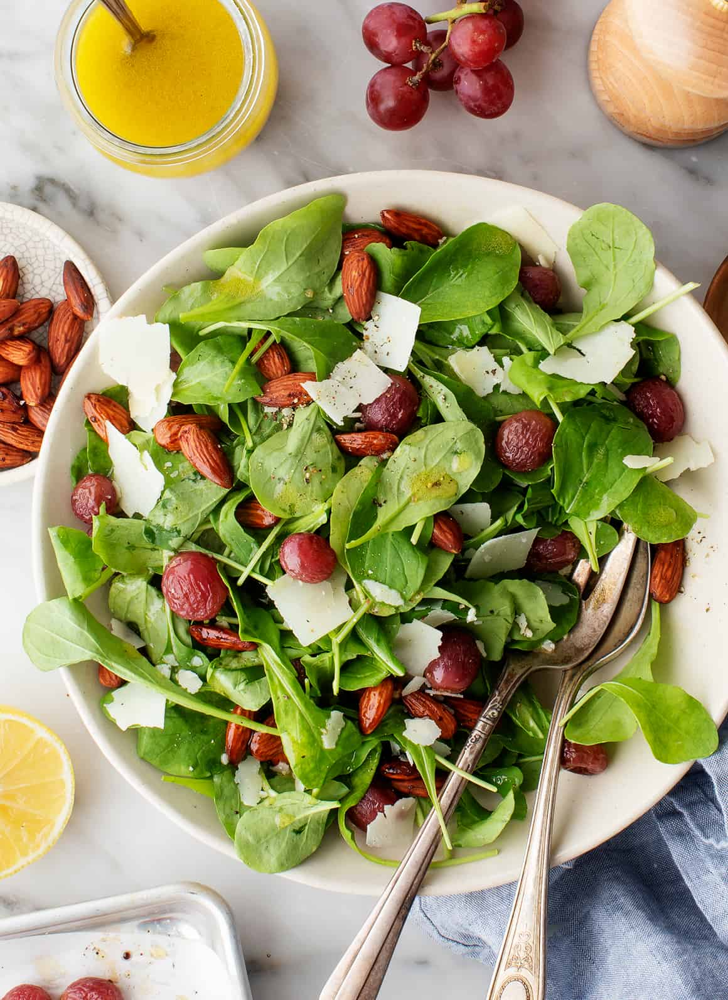

Savory Party Bread/Rating:4
It’s impossible to stop nibbling on warm pieces of this cheesy, oniony bread. The sliced loaf fans out for a fun presentation. It’s one of the best savory appetizers I’ve found. —Kay Daly, Raleigh, North Carolina

Teriyaki Pineapple Meatballs/ Rating:3.5
These teriyaki pineapple meatballs appetizer changed so many times because of my family’s suggestions that it eventually became a main course. I think the homemade sauce sets these meatballs apart. —Evette Nowicki, Oak Harbor, Washington

Italian Chopped Salad/Rating:4
This chopped salad is so flavorful that even salad skeptics will pile their plates with seconds! The key ingredients? A punchy dressing, pepperoncini, and TWO types of cheese.
Enchilada Pasta/Rating:4.5
Enchilada Pasta is hands down one of my all time favorite weeknight dinners. Cheesy, beefy pasta cooks right in the enchilada sauce to create a one pot meal that is not only packed full of flavor, but is quick and easy to make, with minimal clean up.
If you are looking for a dinner that everyone will love, and that you can get on the table in under 30 minutes, enchilada pasta won’t let you down.
Daffodil Cake/Rating:3.5
This is a great spring angel food-type of cake made with two flavors of batter alternated in a tube pan.